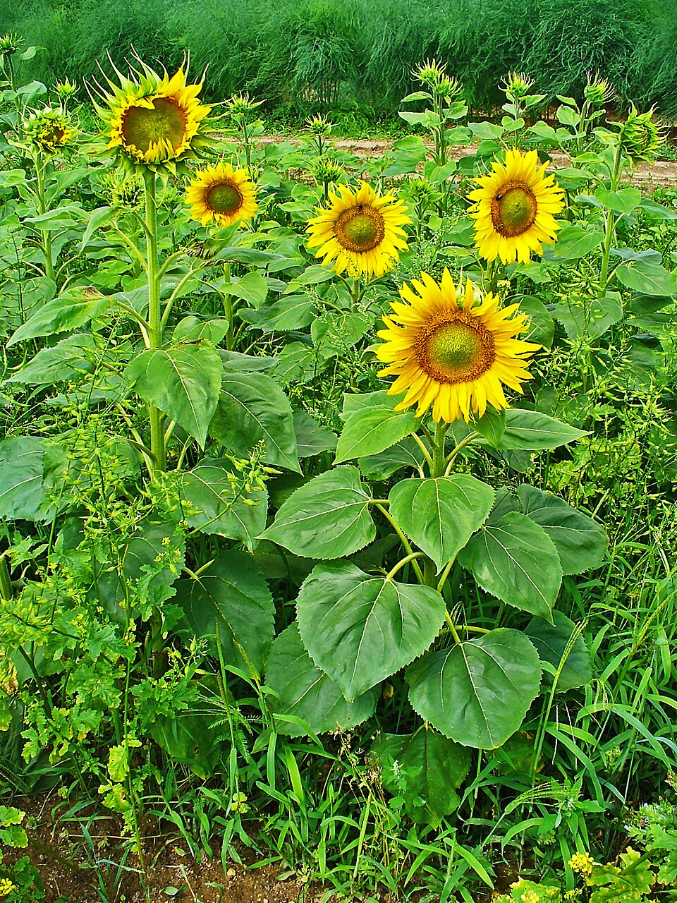

Цветок состоит из стеблевой части (цветоножка и цветоложе), листовой части (чашелистики, лепестки) и генеративной части (тычинки, пестик или пестики). Цветок занимает апикальное положение, но при этом он может располагаться как на верхушке главного побега, так и бокового. Он прикрепляется к стеблю посредством цветоножки. Если цветоножка сильно укорочена или отсутствует, цветок называется сидячим (подорожник, вербена, клевер). На цветоножке располагаются также два (у двудольных) и один (у однодольных) маленьких предлиста — прицветника, которые часто могут отсутствовать. Верхняя расширенная часть цветоножки называется цветоложем, на котором располагаются все органы цветка. Цветоложе может иметь различные размеры и форму — плоскую (пион), выпуклую (земляника, малина), вогнутую (миндаль), удлинённую (магнолия). У некоторых растений в результате срастания цветоложа, нижних частей покрова и андроцея образуется особая структура — гипантий. Форма гипантия может быть разнообразной и иногда участвовать в образовании плода (цинарродий — плод шиповника, яблоко). Гипантий характерен для представителей семейств розовых, крыжовниковых, камнеломковых, бобовых.
